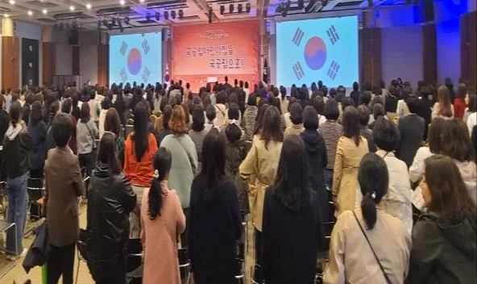

Blog · Event Guide
행사 준비 블로그
행사를 맡은 담당자가 먼저 확인할 것들을 지역별로 정리합니다. 프로그램과 진행, 장소와 음향, 날씨와 안전, 견적까지 현장 기준으로 씁니다.

행사 준비 공통 · 2026년 11월 28일
가라사대 게임, 크리스마스 학예회에서 듣고 움직이는 순서
크리스마스 학예회에 넣을 가라사대 게임을 조건이 붙은 말과 붙지 않은 말로 나눠 구성합니다. 작은 동작 네 가지, 연습부터 바꿔 말하기까지의 순서, 아이를 탈락시키지 않는 진행 문장을 제안합니다.

은평 · 2026년 11월 28일
눈치게임, 은평 송년의 밤에 차례 없이 잇는 숫자
은평 주민·협회 송년의 밤에 눈치게임을 넣는 방법입니다. 미리 차례를 정하지 않고 숫자를 이어 가되 겹친 목소리를 탈락 대신 다시 시작하는 신호로 쓰는 짧은 진행 예시를 담았습니다.

행사 준비 공통 · 2026년 11월 28일
음악퀴즈, 송년회에서 제목 대신 들려줄 세 단서
회사 송년회 음악퀴즈를 노래 제목만 맞히는 순서로 채우지 않는 방법입니다. 직접 만든 짧은 소리로 악기·높낮이·반복을 듣는 문제를 제안하고, 기존 음원을 쓸 때 확인할 범위도 구분합니다.

행사 준비 공통 · 2026년 11월 27일
그림퀴즈, 크리스마스 학예회 칠판에 더할 선 세 가지
크리스마스 학예회를 준비하는 교사를 위한 그림퀴즈입니다. 칠판에 귀마개·종·썰매를 직접 그리며 단서를 더하는 예시와, 아이의 다른 답을 듣고 다음 선을 고르는 방법을 소개합니다.

동대문 · 2026년 11월 27일
아이스브레이킹 게임, 동대문 송년회 첫 짝을 어떻게 소개할까요?
동대문 회사 송년회에서 처음 만난 동료와 하는 아이스브레이킹 게임입니다. 짝에게 호칭과 취향 하나를 묻고 테이블에 소개하는 말, 세 명이 남을 때의 방법까지 제안합니다.
행사 준비 공통 · 2026년 11월 27일
전래놀이, 실내 송년의 밤에는 윷놀이와 산가지 중 어느 쪽이 맞을까요?
주민 모임의 실내 송년의 밤에 쓸 전래놀이를 고르는 글입니다. 한 판을 같이 보는 윷놀이와 자리마다 모양을 맞추는 산가지를 비교하고 두 놀이를 짧게 바꾸는 규칙을 제안합니다.

행사 준비 공통 · 2026년 11월 26일
풍선게임, 크리스마스 인사를 건네는 3단계
어린이집·유치원의 크리스마스 풍선게임을 터뜨리기 경쟁 대신 인사를 건네는 협력 놀이로 구성합니다. 받칠 자리 찾기, 옆 친구에게 천천히 건네기, 함께 내려놓기와 풍선 대신 쓸 대안을 정리했습니다.
중랑 · 2026년 11월 26일
크리스마스 파티, 중랑 직장 모임을 잇는 4가지 장면
중랑 직장인의 크리스마스 파티를 짧은 공동 이야기로 구성하는 방법입니다. 테이블에서 장면을 만들고 짧게 읽은 뒤 객석이 결말을 고르는 네 장면으로, 성인 연말 모임의 발표와 참여 프로그램을 연결합니다.

행사 준비 공통 · 2026년 11월 26일
OX퀴즈, 송년의 밤에 앉아서 고르는 네 문제
주민·협회 송년의 밤 OX퀴즈를 이동과 탈락 없이 진행하는 방법입니다. 함께 들은 짧은 겨울 문장에서 답을 찾는 원본 네 문제와 O·X를 표시하는 방법, 정답 뒤 다시 참여하는 말을 담았습니다.
행사 준비 공통 · 2026년 11월 25일
컵 쌓기 게임, 크리스마스 학예회에 함께 세우는 트리
크리스마스 학예회의 컵 쌓기 게임을 유아와 초등학생이 함께 완성하는 트리 놀이로 소개합니다. 컵 여섯 개의 배치부터 건네기와 쌓기 역할, 무너진 층에서 다시 시작하는 말까지 준비할 수 있습니다.
성북 · 2026년 11월 25일
송년회 장기자랑, 성북 회사 무대는 어떻게 이을까요?
성북에서 사내 송년회 장기자랑을 준비하는 담당자를 위해 낭독과 연주, 합동 공연을 나눠 봅니다. 팀이 직접 고를 참가 방식과 사회자가 다음 무대로 이어 줄 소개말을 예시로 정리했습니다.
행사 준비 공통 · 2026년 11월 25일
넌센스퀴즈 3문제, 송년의 밤에 들려줄 말장난
주민 모임·협회 송년의 밤에서 사회자가 바로 읽어 볼 넌센스퀴즈 세 문제입니다. 같은 소리가 다른 뜻이 되는 순간을 살려 질문하고, 처음 온 참석자에게도 통하는 새 문제를 만드는 법을 담았습니다.

행사 준비 공통 · 2026년 11월 24일
크리스마스 게임, 아이가 완성하는 그림 카드 세 장
유치원과 초등 저학년 크리스마스 게임으로 그림 카드 세 장을 섞어 작은 이야기를 만들어 보세요. 읽지 않고 고르는 유아 판부터 빠진 장면을 보태는 학교 판까지 진행 말을 붙였습니다.
남양주 · 2026년 11월 24일
남양주 레크리에이션 강사 섭외, 송년회 시범에서 무엇을 볼까요?
남양주 기업 송년회에서 레크리에이션 강사 섭외를 맡았다면 같은 놀이 한 가지를 후보에게 건네 보세요. 첫 설명과 잘못 이해한 팀에게 건네는 말, 도구가 빠졌을 때 바꾸는 규칙을 비교합니다.
행사 준비 공통 · 2026년 11월 24일
초성퀴즈 6문제, 송년의 밤에 쉬운 것부터 내는 법
협회와 주민 모임의 송년의 밤에서 그대로 읽을 초성퀴즈 여섯 문제를 만들었습니다. 공개할 자음, 첫 단서, 추가 단서와 정답을 나누고 예상 밖의 답을 받는 방법도 예로 들었습니다.

행사 준비 공통 · 2026년 11월 23일
실내 에어바운스 대여, 크리스마스 강당에 들어갈까요
실내 에어바운스 대여를 검토하는 학교와 유치원 선생님이 크리스마스 장식, 무대, 아이들이 기다릴 자리까지 포함해 강당을 확인하고 장비를 쓸지 다른 놀이로 바꿀지 정하는 방법입니다.
강북 · 2026년 11월 23일
강북 송년회 게임 추천, 겨울 낱말 빙고판 짜는 법
강북에서 회사 송년회를 준비하는 총무를 위한 송년회 게임 추천입니다. 팀마다 다른 겨울 낱말 빙고판을 만들고, 같은 순간 두 줄이 나와도 함께 마칠 수 있게 진행하는 방법을 소개합니다.

행사 준비 공통 · 2026년 11월 23일
단체 게임 레크레이션, 송년 인사를 박자로 잇는 3단계
단체 게임 레크레이션을 맡은 사내 진행자를 위한 송년회 마무리 놀이입니다. 박수를 되돌려 주고, 옆자리로 넘기고, 마지막 쉼에서 연말 인사를 건네는 방법을 예시로 풀었습니다.
행사 준비 공통 · 2026년 11월 22일
회사 송년회 프로그램 감사 인사로 여는 진행 순서
회사 송년회 프로그램을 맡은 총무와 인사 담당자를 위한 구성안입니다. 동료의 일을 떠올리는 질문을 만들고 식사와 대화, 합동 놀이를 잇는 방법을 예시 식순으로 살펴봅니다.

도봉 · 2026년 11월 22일
도봉 행사 사회자 섭외, 송년 모임에서 누가 발언을 맡을까요
도봉에서 겨울 협회 송년회나 주민 모임을 준비하는 담당자를 위한 행사 사회자 섭외 안내입니다. 회의를 맡은 의장과 축하 순서를 맡은 사회자가 마이크를 주고받는 기준을 정리합니다.
행사 준비 공통 · 2026년 11월 22일
초등학교 학예회 학생 사회와 어른 사회의 차이
초등학교 학예회에서 학생이 자기 반 작품을 소개하고 어른이 뒤에서 돕는 방법입니다. 소개 카드의 질문, 합주와 낭독의 첫 소리, 대사가 막혔을 때의 약속을 정리합니다.
행사 준비 공통 · 2026년 11월 21일
어린이집 크리스마스 행사, 공연과 참여 놀이의 차이
어린이집 크리스마스 행사를 준비하며 공연 중심과 참여 놀이 중심의 차이를 비교합니다. 아이들의 익숙함과 교사의 역할, 가족 참여 여부에 맞춰 사회자와 레크리에이션 상담 방향을 정리합니다.

행사 준비 공통 · 2026년 11월 21일
경로잔치 레크리에이션, 연말 모임을 위한 4가지
경로잔치 레크리에이션을 준비하는 기관과 경로당 담당자를 위해 연말 인사와 참여 놀이의 균형을 정리합니다. 앉아서 함께하는 놀이, 노래와 대화의 연결, 사회자 상담 방향을 살펴보세요.
의정부 · 2026년 11월 21일
송년회 사회자 섭외, 의정부에서는 무엇부터 정할까요
송년회 사회자 섭외를 준비하는 의정부 기업 담당자를 위한 연말 행사 안내입니다. 공식 순서와 교류 시간의 비중, 사회자의 진행 방식, 레크리에이션과 음향의 상담 범위를 정리합니다.
행사 날짜가 정해지셨나요?
날짜 · 지역 · 인원 · 행사 종류만 알려 주시면 행사에 맞춰 상담 · 견적을 안내드립니다. 행사 중엔 통화가 어려우니 문자 · 카톡을 남겨 주세요.